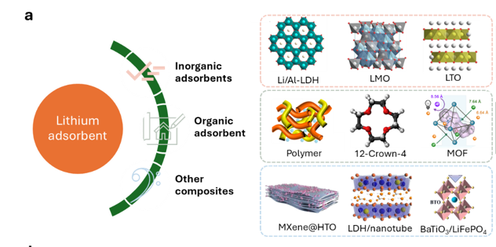
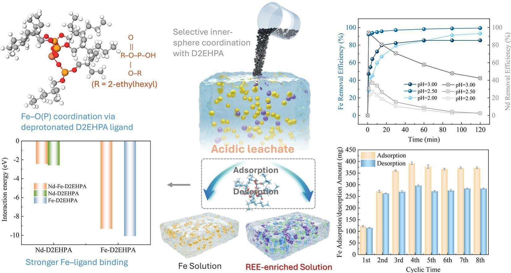
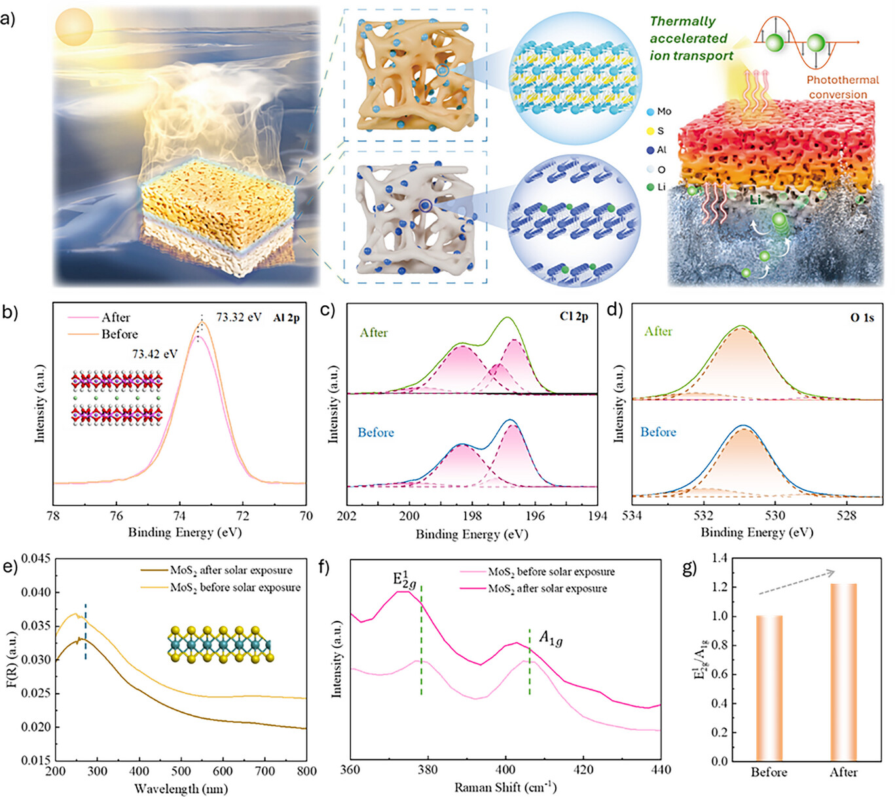
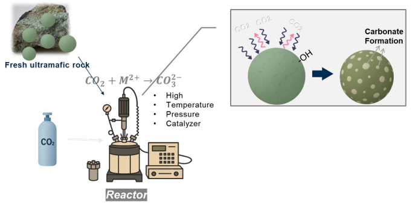

Research Overview
Our research connects ion-scale mechanisms with practical recovery processes. Five themes span selective separations, coupled transport, continuous extraction, and carbon storage.
Experiments and computational modeling guide this work, with data-driven and AI approaches informing new materials and process development.
Ion-Selective Adsorbents

We engineer layered hydroxides, polymer-modified sorbents, porous fibers, and granules for lithium capture from brines and produced water. Our work examines how surface chemistry, interlayer water, and material architecture control ion selectivity and regeneration.
Impurity Separation & Rare-Earth Enrichment

We use solution chemistry and selective coordination to separate interfering ions from valuable elements. Studies include pH-controlled iron removal from rare-earth leachates and staged lithium–boron separation, with attention to recovery, desorption, and reuse.
Photothermal & Hydration-Controlled Recovery

We couple solar-driven evaporation with selective adsorption to recover lithium. By studying local heating, water transport, and ion hydration at material interfaces, we explore how light and interfacial chemistry can work together to improve separation.
Continuous Extraction & Process Integration

We connect adsorbent development with fixed-bed columns and direct lithium extraction flowsheets. Our research combines membrane or activated-carbon pretreatment, selective capture, and regeneration to manage complex feeds and support continuous operation.
Carbon Mineralization & Resource Utilization

We investigate how fine-grained mafic minerals react with CO₂ to form stable carbonates. Linking grain size, surface composition, and reaction kinetics helps us understand carbon storage and assess opportunities for using reactive minerals and mine wastes.